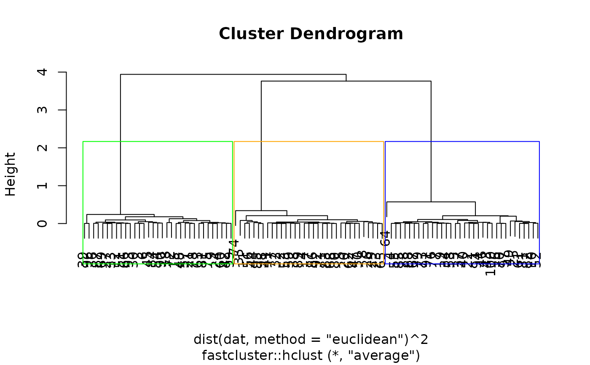

rect_hier_clusters.RdDraws rectangles around the branches of a dendrogram highlighting the corresponding clusters. First, we cut the dendrogram at a certain level, then a rectangle is drawn around selected branches. This function is like the rect.hclust function, but it indexes the clusters according to the names assigned by the cutree function, rather than by left to right.
rect_hier_clusters(
hcl,
k = NULL,
h = NULL,
which,
border = NULL,
cluster = NULL
)An object of the type produced by hclust.
Scalar. Cut the dendrogram such that either exactly k clusters are produced or by cutting at height h.
A vector selecting the clusters around which a rectangle should be drawn. Clusters are selected by number (according to the cutree function)
A vector of border colours for the rectangles
Optional vector with cluster memberships as returned by cutree(hclust.obj, k = k), can be specified for efficiency if already computed.
(Invisibly) returns a list where each element contains a vector of data points contained in the respective cluster.
# Simulates a 100 x 2 data set with three clusters
set.seed(123)
dat <- rbind(c(-1, 0), c(0, sqrt(3)), c(1, 0))[rep(1:3, length=100), ] +
matrix(0.2*rnorm(200), 100, 2)
# Average linkage hierarchical clustering
# We use the version of hclust in fastcluster because it's faster than the version in stats
hcl <- fastcluster::hclust(dist(dat, method="euclidean")^2, method="average")
# plot dendrograms with the three clusters displayed in blue, orange, and green, respectively
plot(hcl)
rect_hier_clusters(hcl, k=3, which=1:3, border=c("blue", "orange", "green"))
